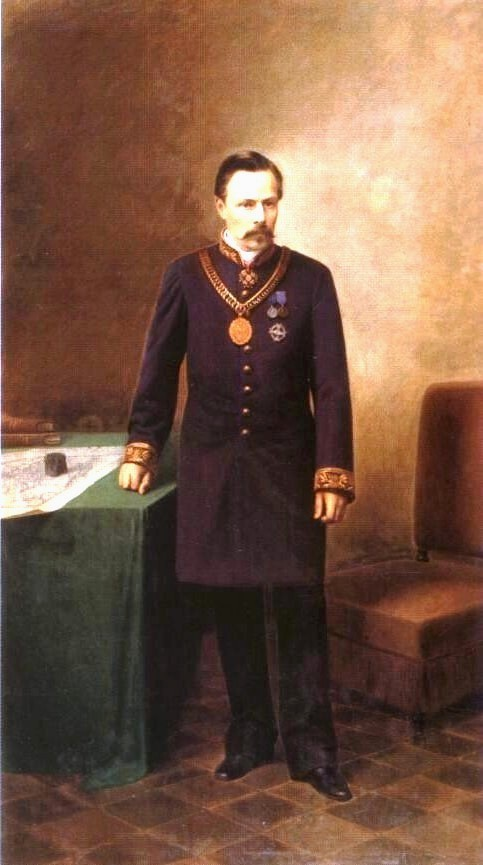

Olexander Paul
Steppe Columbus

Portrait O.M. Paul with signs Honorary citizen Yekaterynoslav
- Born on in Malooleksandrivka, Verkhnodniprovsk district, Yekaterynoslav Governorate (now in Verkhnodniprovsk district, Sicheslav region), in the family of second lieutenant Nikolai Ivanovich Paul and Anna Pavlovna (nee Pauletika).
- In the summer of , he discovered iron ore deposits in Oak Beam under Kryvyi Rih and sent samples to the Mining Department. In 1871-1872 explored the mineral deposits of Kryvyi Rih. Acquired the Pokrovsk deposits of asp.
- In the winter of he traveled to the mining regions of France, Italy, Switzerland, and Germany. At the Mining Academy of Freiberg, at the request and at the expense of O.M. Paul, samples of Kryvyi Rih ore were studied. From the summer of 1872 to the autumn of 1873, at the initiative and at the expense of O.M. Paul, German specialists investigated the Krivorozh'ya iron ore deposits, determined their scale, and their practical use.
- In , O.M. Paul leased for 30 years 18.6 thousand dessiatines unsuitable for agriculture, but rich in iron ore lands. In the same year, in the area of the Oak beam, he began to build his own manor. In 1875, the lease term was extended for another 55 years.
- In , the book “South Russian deposits of magnetic iron ores and iron brilliance in Yekaterynoslav (Verkhnodniprovsk county) and Kherson provinces” by mining engineer L. Shtrippelman was published in Leipzig. In the same year, the book was published in St. Petersburg in its translation by means of O.M. Paul.
- On , the project of the railway connecting Krivorozh'ye with the Donbas (not implemented because of the war of 1877–78) was approved to the highest degree. December 22, 1880 in Paris, an anonymous society of Kryvyi Rih iron ores with an authorized capital of 5 million francs was created. The main shareholders were O. M. Paul and the French capitalists. On May 5, 1881, the Russian government approved the charter and authorized the activities of the French (Paris) Society of Iron Ore Kryvyi Rih.
- In , with the purchase, a survey of 500 desyatins of convenient and inconvenient land from the village of Pokrovskogo (modern Pokrovskoye), the property of a nobleman L. O. Shmakov was carried out, of which four hundred and fifty dessiatines were laid down by the Kherson bank and fifty dessiatinas unencumbered, came into possession of the titular Counselor Olexander Paul, who were transferred to him as a payment for his share (share) to French society and on which the Saksagansk iron ore layer (Saksagansk mine) of Krivoi Rog was opened for mining.
- On , the grand opening of the Ekaterininskaya railway from the Yasinovataya station through Ekaterinoslav and Kryvyi Rih to Dolinskaya station took place.
- In , O.M. Paul participated in the VI Archaeological Congress in Odessa, where he demonstrated antiquities from his own collection. In December 1887 the archaeological museum of O.M. Paul was opened in Yekaterynoslav, consisting of seven sections.
- In , the French Society began construction of the first blast furnace at the Gdantsev Iron Foundry. In the same year, for the first time during the existence of the “Iron Ore of Kryvyi Rih” society, the profit was more than 7%, and the shareholders were paid 5% of dividends.
- On , O. M. Paul died suddenly from a broken heart. He was buried at the Sevastopol cemetery in Yekaterynoslav.